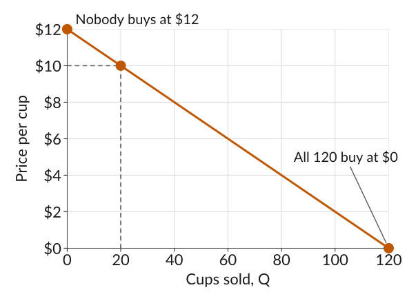
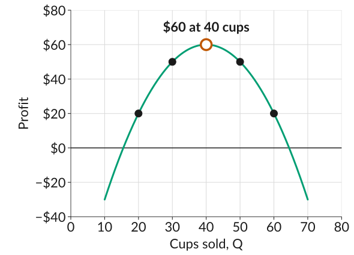
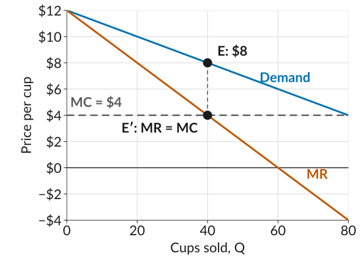

ECON 201: Principles of Microeconomics
Lecture 9
Boba Break is a stall at the Tuesday farmers market on campus. What price should it charge for a cup of boba to maximize its profit?
\[\text{Profit} = \underbrace{P \times Q}_{\text{revenue, } R} - \underbrace{C(Q)}_{\text{cost}}\]
Boba Break pays $100 for the stall per day and it costs $4 to make each cup of boba. So the total cost is \[C(Q) = 100 + 4Q\]
| \(Q\) | \(C(Q)\) | \(\text{AC}\) | \(\text{MC}\) |
|---|---|---|---|
| 20 | 180 | 9.00 | 4 |
| 30 | 220 | 7.33 | 4 |
| 40 | 260 | 6.50 | 4 |
| 50 | 300 | 6.00 | 4 |
| 60 | 340 | 5.67 | 4 |
\[P = 12 - \frac{Q}{10}\]

How do we get Boba Break’s profit for any quantity \(Q\)?
Doing the same for several quantities gives the table below.
| \(Q\) | \(P\) | \(R\) | \(C(Q)\) | Profit |
|---|---|---|---|---|
| 20 | 10 | 200 | 180 | 20 |
| 30 | 9 | 270 | 220 | 50 |
| 40 | 8 | 320 | 260 | 60 |
| 50 | 7 | 350 | 300 | 50 |
| 60 | 6 | 360 | 340 | 20 |

The marginal revenue is the increase in revenue when one additional unit of output is sold:
\[\text{MR} = \frac{\Delta R}{\Delta Q}\]
Example: Boba Break goes from 20 cups to 21.
Here is the marginal revenue from one more cup at each quantity. Where is it above the marginal cost of $4, and where is it below?
| \(Q\) | \(R(Q)\) | \(P(Q+1)\) | \(R(Q+1)\) | \(\text{MR}\) | \(\text{MC}\) |
|---|---|---|---|---|---|
| 20 | 200 | 9.90 | 207.90 | 7.90 | 4 |
| 30 | 270 | 8.90 | 275.90 | 5.90 | 4 |
| 40 | 320 | 7.90 | 323.90 | 3.90 | 4 |
| 50 | 350 | 6.90 | 351.90 | 1.90 | 4 |
Note: marginal revenue is always less than the price. To sell one more cup, Boba Break has to lower the price on every cup it was already selling: at 20 cups the 21st cup sells for $9.90, but revenue rises by only $7.90.

ECON 201 · Lecture 9